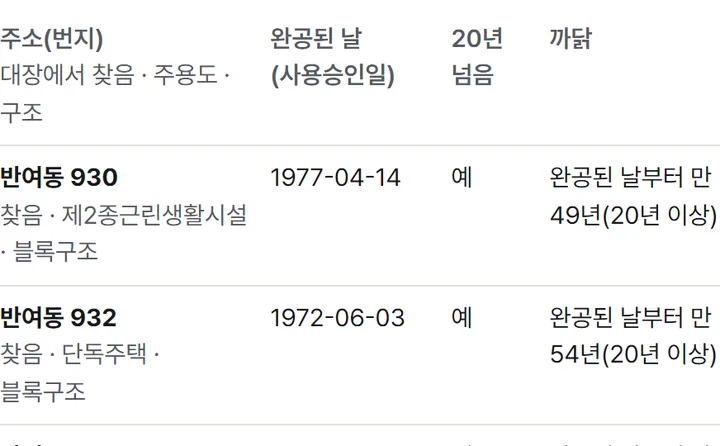
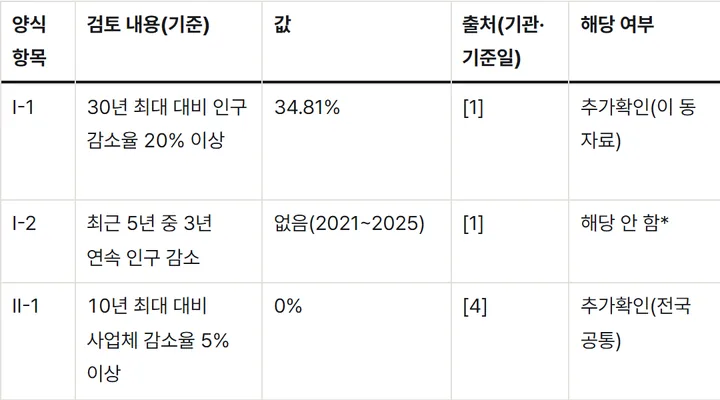
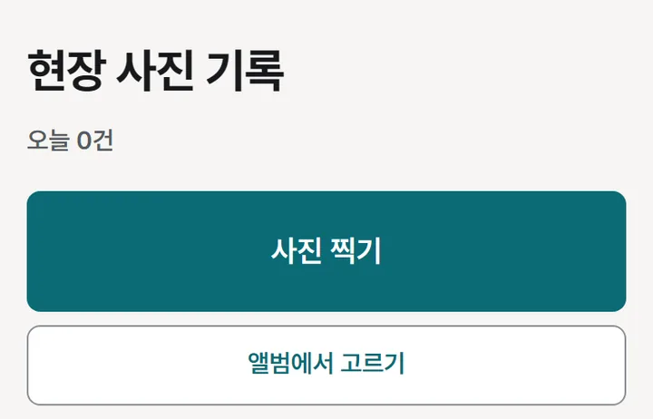

대상지 건물 한 채씩, 건축물대장과 맞춰 드립니다
- 지금은 부산 254개 법정동
- 로그인·설치 없이 무료
- 건물 이름은 싣지 않습니다
리뉴맵이 해 드리는 일
-

지금 됨 · 부산 254개 법정동 대상지 근거표 주소 목록을 붙여 넣으면 건물마다 대장을 찾아, 20년 넘은 건물 비율과 근거 표를 만듭니다. 못 찾은 주소는 까닭과 함께 따로 적습니다. 주소 넣고 계산해 보기 -

무료 · 전국 읍·면·동 신청서용 동네 현황표 동 이름을 넣으면 인구·사업체·오래된 건물 숫자마다 출처와 기준일을 붙여 줍니다. 공모 신청서 4-1 도시쇠퇴현황 검토 표 반여1동 현황표 보기 -

무료 · 휴대폰 현장 사진 기록 사진을 찍으면 위치·날짜와 그 동의 공공 통계가 함께 남고, 사진대지 한글 파일로 받습니다. 사진 찍으러 가기
전국 읍·면·동의 인구와 오래된 건물 현황은 우리 동네에서 출처와 함께 봅니다.
맡은 일로 찾기
- 공모 대상지 기초조사지금 됨 · 부산 254개 법정동
- 결재·의회·감사에 붙일 근거지금 됨 · 참고용 계산
- 돌봄·의료 대상지 고르기지금 됨 · 법정 기준 아님
- CCTV·보안등 설치 검토지금 됨 · 안전 수준을 뜻하지 않음
- 폭염·한파 시설, 급경사지·산불준비 중 · 2026년 11월 22일 확인
지금은 노후 건축물·고령 비율로만 추릴 수 있습니다. 기후 자료는 아직 없습니다.
반여동 예시 결과를 불러오는 중입니다.
숫자를 다루는 원칙
- 숫자마다 자료 이름과 기준 날짜를 옆에 붙입니다.
- 정하지 못한 값은 '추가확인'과 까닭을 적고 셈에 넣지 않습니다.
- 아직 모으지 않은 자료는 '준비 중'이라고 씁니다.
- 참고용 계산입니다. 판단은 구청·담당 기관이 합니다.
사람이 출처를 다시 대조한 납품본이 필요하면 맡기면 받는 것 보기 · 상담하기